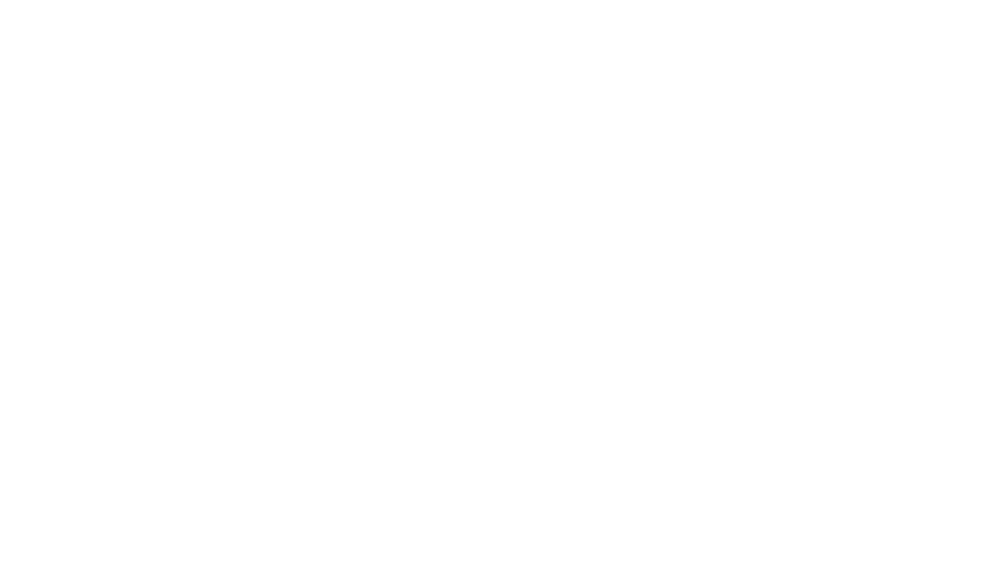
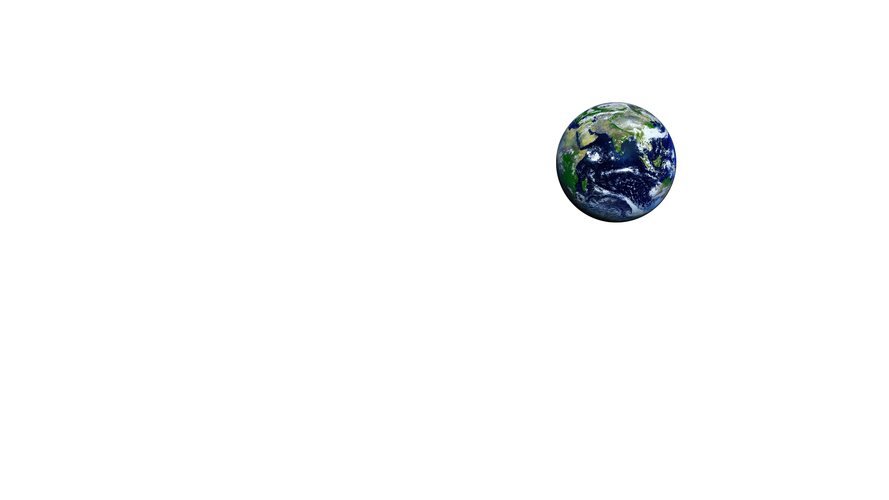
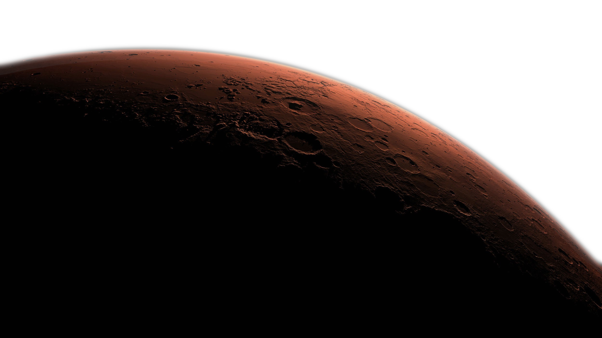

KOLONIZÁCIA MARSU
Okupácia Marsu – Elon Musk
Elon Musk chce osídliť Mars, cena letenky by sa mala dostať pod 200-
tisíc dolárov. Aby bola populácia na Marse udržateľná, musí dosiahnuť
asi milión ľudí.
Milión ľudí
Aby bola populácia na Marse udržateľná, čiže aby dokázala prežiť aj v
prípade, že by nešťastná udalosť znemožnila život na Zemi, musí dosiahnuť
asi milión ľudí.
Hlavným nástrojom na zníženie ceny lístka je vytvoriť vesmírne plavidlo,
ktoré sa bude dať využívať opakovane. Ak by boli lietadlá len na jedno
použitie, cena letenky by bola veľmi vysoká.
Cena letenky
Z toho pohľadu je významný nedávny úspech, keď sa vôbec po prvý krát
podarilo pristáť s prvou časťou rakety, ktorá sa po vyhorení paliva odpája a
donedávna sa nechávala padať do oceánu. Podľa Muskových odhadov by
sa malo podariť stlačiť náklady na zhruba 200-tisíc dolárov.
To je stále dosť veľa, no ide o čiastku, ktorú si už bude môcť dovoliť kritické
množstvo ľudí, čo majú o život na Marse záujem.
Copyright 2019 © Alexander Hornyák